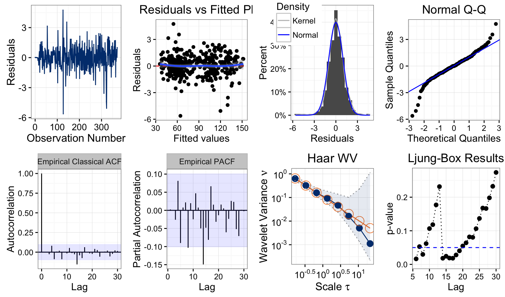

Sample Analyses using exts
Stephane Guerrier and James Balamuta
2016-11-05
Introduction
The objective behind this vignette is to provide a workflow of sample uses cases of this package as it relates to analyzing different time series data.
To use this package, one must first install it. More detailed instructions are given in the Experimental Times Series Features Vignette.
# Installation
install.packages(c("astsa","exts"))
# devtools::install_github("SMAC-Group/exts", build_vignettes = TRUE)
devtools::install_github("SMAC-Group/exts")To load the packages use:
# Load packages
library(exts)
library(astsa)Sample Analyses
Next are a few short example cases that use the package to analyze time series data.
Lynx Data Set (lynx)
################################
## Example: Lynx
################################
# Bring in time series data
xt = gts(log(lynx), start = 1821, freq = 1)
# Obtain the ACF values
vals = compare_acf(xt)
# Graph data
autoplot(vals)# Obtain Empirical ACF & PACF alongside data
vals = eda_ts(xt)
# Graph Data, Empirical (R)ACF, and Empirical PACF
autoplot(vals)
# Select AR coeficient
model_info = select_ar(xt, p.min = 1, p.max = 15)
# Obtain a plot of the model selection criteria
autoplot(model_info)# Fit selected model
model = arima(xt, c(12,0,0))
# Diagnostic plot
# Note two parameters are required
vals = diag_ts(model, xt)
autoplot(vals) sunspot Year Data (sunspot.year)
################################
## Example: Sunspot Year
################################
xt = gts(sunspot.year, start = 1700, freq = 1, unit = "year")
# Obtain Empirical ACF & PACF alongside data
vals = eda_ts(xt, lag.max = 25)
# Graph Data, Empirical (R)ACF, and Empirical PACF
autoplot(vals)# Obtain Empirical ACF & PACF alongside data
vals = eda_ts(xt, lag.max = 48)
autoplot(vals)# Select AR coeficient
model_info = select_ar(xt, p.min = 1, p.max = 15)
# Obtain a plot of the model selection criteria
autoplot(model_info)# Obtain best model according to 'aic'
model = best_model(model_info)
# Diagnostic plot
# Note two parameters are required
vals = diag_ts(model, xt)
autoplot(vals) GNP Data Set (gnp)
################################
## Example: GNP
################################
# Default transforms but applied together in the second case
vals = eda_change(gnp, both = TRUE)
autoplot(vals)
# Bring in time series data
xt = gts(diff(log(gnp)), start = 1700, freq = 1)
# Obtain the ACF values
vals = compare_acf(xt)
# Graph data
autoplot(vals)# Obtain Empirical ACF & PACF alongside data
vals = eda_ts(xt)
# Graph Data, Empirical (R)ACF, and Empirical PACF
autoplot(vals)# Select model
model_info = select_arma(xt, p.max = 4, q.max = 3)
# Obtain a plot of the model selection criteria
autoplot(model_info)# Fit selected model
model = arima(xt, c(3,0,2))
# Diagnostic plot
# Note two parameters are required
vals = diag_ts(model, xt)
autoplot(vals) Production Index Data (prodn)
################################
## Example: Production index
################################
data(prodn)
xt = gts(prodn, start = 1948, freq = 12, unit = "year")
# Obtain Empirical ACF & PACF alongside data
vals = eda_ts(xt, lag.max = 48)
# Graph Data, Empirical (R)ACF, and Empirical PACF
autoplot(vals)# d = 1
xt = gts(diff(prodn), start = 1948, freq = 12, unit = "year")
# Obtain Empirical ACF & PACF alongside data
vals = eda_ts(xt, lag.max = 48)
# Graph Data, Empirical (R)ACF, and Empirical PACF
autoplot(vals)# d = 1 and D = 1
xt = gts(diff(diff(prodn),12), start = 1948, freq = 12, unit = "year")
# Obtain Empirical ACF & PACF alongside data
vals = eda_ts(xt, lag.max = 48)
# Graph Data, Empirical (R)ACF, and Empirical PACF
autoplot(vals)# Fit models
m1 = arima(prodn, c(2,1,0), seasonal = list(order = c(0, 1, 1), period = 12))
m2 = arima(prodn, c(2,1,0), seasonal = list(order = c(0, 1, 2), period = 12))
m3 = arima(prodn, c(2,1,0), seasonal = list(order = c(0, 1, 3), period = 12))
m4 = arima(prodn, c(2,1,0), seasonal = list(order = c(0, 1, 4), period = 12))
# Compute AIC
AIC(m1)## [1] 1162.334AIC(m2)## [1] 1163.712AIC(m3)## [1] 1139.965AIC(m4)## [1] 1141.898# Diagnostic plot
# Note two parameters are required
vals = diag_ts(m3, prodn)
autoplot(vals)
Unemployment Data (unemp)
################################
## Example: Unemployment
################################
# Bring in time series data
data("unemp", package="astsa")
Xt = gts(unemp, start = 1948, freq = 12)
autoplot(Xt) + ylab("Monthly US Unemployement Index")# Obtain Empirical ACF & PACF alongside data
vals = eda_ts(Xt, lag.max = 48)
# Graph Data, Empirical (R)ACF, and Empirical PACF
autoplot(vals)# Take difference
Xt = diff(unemp)
# Obtain Empirical ACF & PACF alongside data
vals = eda_ts(Xt, lag.max = 48)
# Graph Data, Empirical (R)ACF, and Empirical PACF
autoplot(vals)# Take a difference, then take a seasonal difference
Xt = diff(diff(unemp),12)
# Obtain Empirical ACF & PACF alongside data
vals = eda_ts(Xt, lag.max = 48)
# Graph Data, Empirical (R)ACF, and Empirical PACF
autoplot(vals)
# Create a seasonal arima model
m5 = arima(unemp, c(2,1,0), seasonal = list(order = c(0, 1, 1), period = 12))
# Diagnostic plot
# Note two parameters are required
vals = diag_ts(m5, prodn)
autoplot(vals)